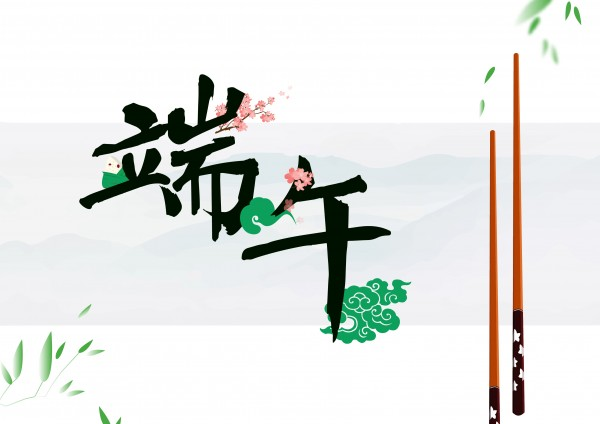
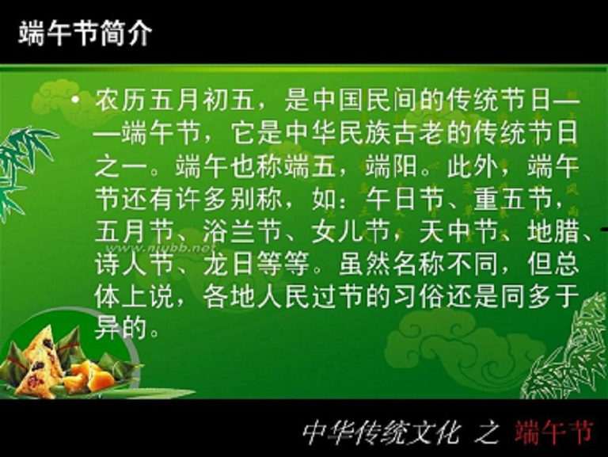

端午从字面上还有“端五”、“重五”、“重午”等名称。“端”古汉语有开头、初始的意思，称“端五”也就如称“初五”。《每月有三个五日，头一个五日就是“端五”。
端午”一词最早出现于西晋名臣周处的《风土记》，这本文献成了现代人们查考端午节等传统节日习俗的重要参考。端午节起源于何时──长期以来众说纷纭，说法不一，争论不休。
综览汉魏文献资料可发现，汉王朝经历四百余年历史，充满浪漫、激情，保持南楚故地乡土本色的楚文化，而被誉满天下的楚文化传人屈原，在汉魏前时代的端午节活动没有留下只言片语记载，因而许多学者认为端午节与屈原无关。
粽籺：古称“角黍”，真正有文字记载的粽子见于晋周处的《风土记》；而流传有序，历史最悠久的粽子则是西安的蜂蜜凉粽子，载于唐韦巨源《食谱》。粽早在春秋时期就已出现，最初是用来祭祀祖先和神灵；到了晋代，粽子成为端午节庆食物
雄黄酒：端午饮雄黄酒的习俗，从前在长江流域地区极为盛行。用研磨成粉末的雄黄泡制的白酒或黄酒。雄黄可以用做解毒剂、杀虫药。于是古代人就认为雄黄可以克制蛇、蝎等百虫，“善能杀百毒、辟百邪、制蛊毒，人佩之，入山林而虎狼伏，入川水而百毒避”。
五黄：江浙一带有端午节吃“五黄”的习俗。此外浙北端午节还有吃豆腐的习俗。五黄指黄瓜、黄鳝、黄鱼、鸭蛋黄、雄黄酒。也有其他说法，咸鸭蛋可以用黄豆替代。
煎堆：福建晋江地区，端午节家家户户还要吃“煎堆”，就是用面粉、米粉或番薯粉和其他配料调成浓糊状煎成。相传古时闽南一带在端午节之前是雨季，阴雨连绵不止，民间说天公穿了洞，要“补天”。端午节吃了“煎堆”后雨便止了，人们说把天补好了。这种食俗由此而来。